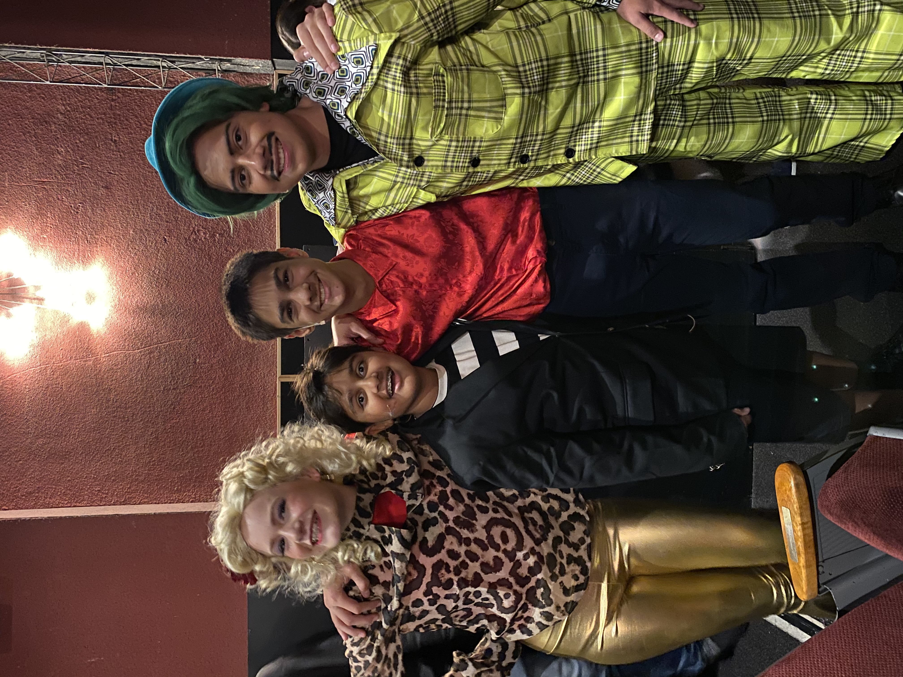
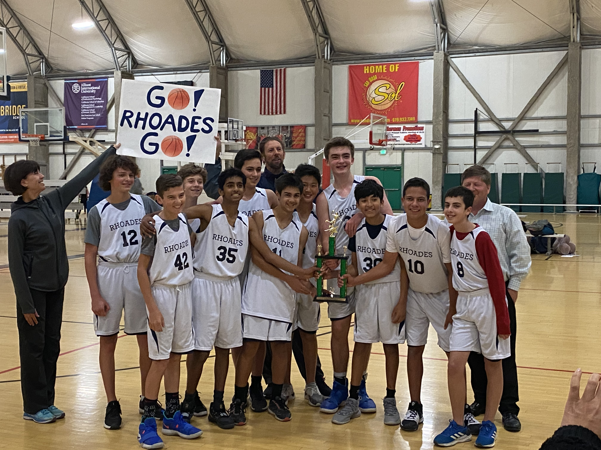

Outside of school, I participate in many extracurricular activities. Some of these include:
Soccer: I am a Cal South referee, and I won the 2019 LAGSD Referee of the Year award.
Football: I am a member of the Dartmouth Big Green NCCFNL team.
Basketball: I am a member of the Rhoades School basketball team. We were the 2019-2020 IMSL champions, and entered the playoffs as the #1 seed, with an undefeated league record.
Track and Field: I was a Rhoades School "Rhoaderunner".
Cross-Country: I am a Rhoades School "Rhoaderunner".
Theater: I recently played Mr. Wormwood in Matilda, as well as playing a Parent/Big Kid/Henchman, and helping the stage crew.
Music: I am a member of the band Variation 5, also known as Four. I have played the piano, the drums, the guitar, the bass, the congos, the bongos, the digeridoo, and the triangle. I also write music, and often write songs with and for the rapper L!l Munk.
These extracurricular have made me a better leader, a better team player, and a better person. The sports that I participate in, such as soccer and football, have helped me to grow my physical strength, while the arts I practice, such as theater and music, have helped me to grow my mental strength.

The Wormwoods (and Rudolpho)
TRS Boy's B-ball: 2019-2020 IMSL Champions! Home Page